雾岭疗养院（夜）
1934 年的肺结核疗养院建在雾岭南坡，1992 年在坡上加建新楼，2003 年停用。夜里起雾，你来找失联的妹妹，而夜班护士长还在巡房。 她会听、会看、会搜柜子，但规则公开、可预测；你唯一的武器是对这栋楼的空间理解。
可玩版本 · 第一人称
同一份地图数据编译成可以走、可以被追的 3D 关卡：门洞由导航边自动切出，护士长走的就是图纸上那张导航图。贴图和模型全部来自 Poly Haven（CC0），声音实时合成。
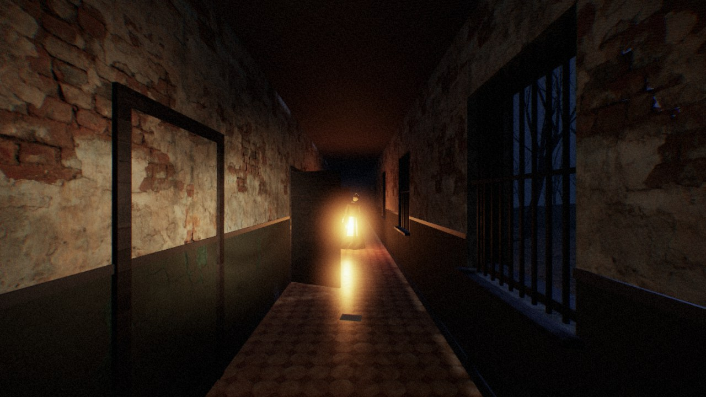
进入可玩版本 →目标
找到躲在 307 的妹妹，再带她离开。正门要院长办公室（新楼 6F）的钥匙；后门是电动门，得先拿到旧手术室的保险丝，从太平间的运尸隧道下山修好锅炉房的配电柜。操作
WASD 移动 · 鼠标转头 · Shift 跑 · C 蹲 · F 手电 · E 开门 / 拾取 / 阅读 / 躲进柜子 · 空格 躲藏时屏住呼吸 · M 旧地图 · Esc 暂停她的规则
- 脚步声和哼歌都是真实距离，她听声音也按走路距离算，铅墙后面听不见
- 开着手电，30 米外就能看见你；关掉手电要靠记忆走
- 看见你躲进哪个柜子，就会把你拉出来；离你很近时要屏住呼吸
- 进不了礼拜堂和广播室，进去会自动存档
- 压迫计满了会钻进送餐井，过一阵从你前方、但不在视野里的井口出来
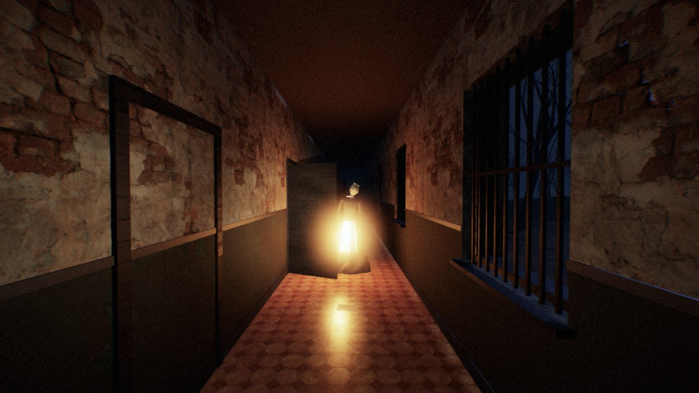
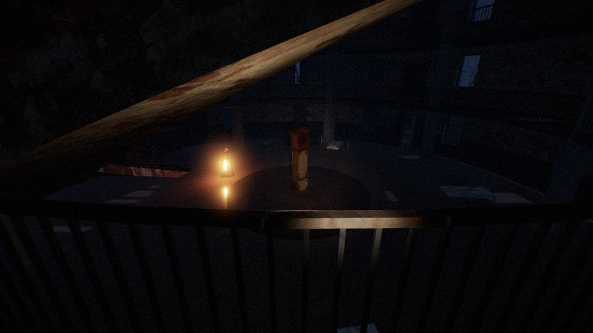
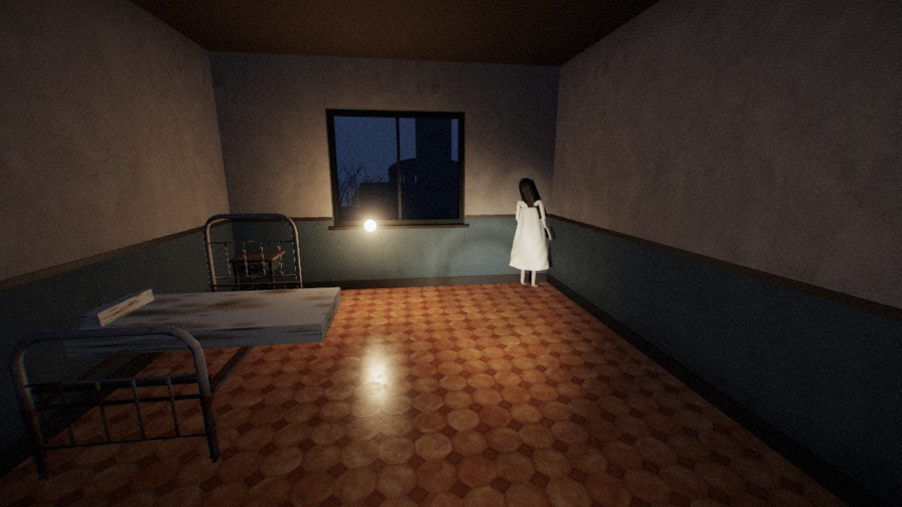
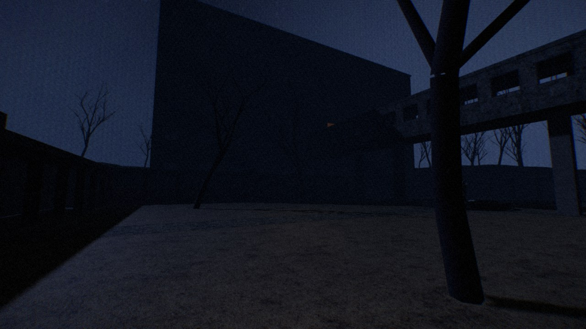
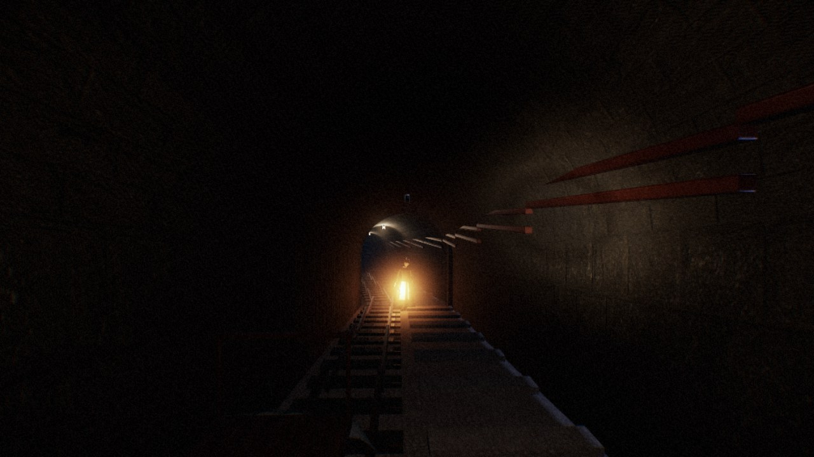
AI 动作模式（给模型评测用）
和公园、商场、山城同一套动作：forward 走到下一个路口 / 门 / 楼梯 / 物品，turn_left / turn_right 转 45°，turn_around，另加 interact（拾取、叫醒、装保险丝、读纸条、躲进柜子）、run、wait(s)、flashlight、stop（到了目的地）和 declare_impossible(原因)。两步之间世界暂停，每一步按实际耗时推进，护士长照常巡逻、听声、追人。最优步数是 oracle 的动作数（掉头算 1 步）；最后一列是护士长活动时只管照最优路线赶路，8 个随机种子里有几次活着完成。| 任务 | 路线 | 最优步数 | 步数上限 | 只管赶路（8 个种子） |
|---|---|---|---|---|
找到妹妹 sister | 围墙破洞 → 新楼 307，叫醒她 | 32 | 75 | 8/8 |
拿到保险丝 fuse | 围墙破洞 → 旧手术室（换种子会换成 X 光室或新楼 B1 的洗衣房） | 19 | 45 | 8/8 |
带妹妹从后门离开 escape | 307 → 太平间 → 运尸隧道 → 锅炉房装保险丝 → 后门 | 24 | 60 | 1/8，多在第 11 步被抓 |
带妹妹从正门离开 escape_main | 307 → 院长办公室拿钥匙 → 圆厅正门 → 车道 | 45 | 115 | 0/8，多在第 11 步被抓 |
全程（挑战） full | 保险丝 → 妹妹 → 隧道 → 来电 → 后门 | 72 | 170 | 0/8，第 53–55 步被抓 |
妹妹的手机 phone | 围墙破洞 → 老楼走到底，爬 A1 楼梯上 3F 晒台捡手机。A2 楼梯 2F 以上砌死，圆厅的插销门只能从病区一侧打开 | 34 | 75 | 8/8 |
档案室的病历 records | B1 隧道口 → 太平间拿钥匙（换种子会换成洗衣房或急诊） → 东梯上 2F → 连廊到圆厅 3F → 下一层 → 服务翼 2F 档案室。错层：新楼 2F 和老楼 3F 一样高 | 31 | 70 | 7/8 |
走后山回小教堂 hill | 锅炉房 → 后山小门 → 石阶 → 山顶铁门（只能从山路一侧推开）→ 小教堂，到了 stop | 14 | 35 | 8/8 |
四楼的值班记录（做不到） floor4 | 4F 楼梯间的门被烧死，西梯只到 3F，电梯没电。要先亲眼看到烧坏的门，再用 declare_impossible 说出「4F」和「烧 / 封 / 打不开」 | 8 | 30 | 8/8 |
五楼的更衣柜（floor4 的对照） floor5 | 同一部东梯经过烧坏的 4F 继续上 5F，躲进职工更衣室的柜子；在这里说做不到算错 | 14 | 40 | 8/8 |
绿色出口线 exit_sign | 带妹妹出新楼：绿线通向锁死的北门，真正的出口是急诊的救护车门（只能从里面推开）→ 庭院喷泉，到了 stop | 12 | 30 | 8/8 |
甩掉护士长 evade | 她在 28 米外追来：掉头跑，拔开插销门进圆厅 2F 的广播室，撑满 60 秒。原地等、走着去、当着她的面躲柜子都会被抓 | 10 | 25 | 8/8 |
照片里的房间 photo | 只给一张照片：X 光室（换种子会换成广播室、职工宿舍或厨房）。找到拍照的位置，到了 stop | 26 | 60 | 8/8 |
原路返回 homing | 围墙破洞 → 旧手术室拿保险丝（位置随种子变）→ 回到围墙破洞，到了 stop | 38 | 85 | 8/8 |
WebEnv("sanatorium", "escape", base_url="http://127.0.0.1:8766")；photo 的照片在 reset 时给出（obs["task_image_png"]）。浏览器里打开 play.html?ai=1&task=escape 可以看任务卡，oracle() 给出最优动作序列。三个代表性空间
按地图规格程序化搭建，CC0 贴图 + Blender Cycles 体积雾。画面里的每个元素都对应一条玩法规则。点图片看大图。
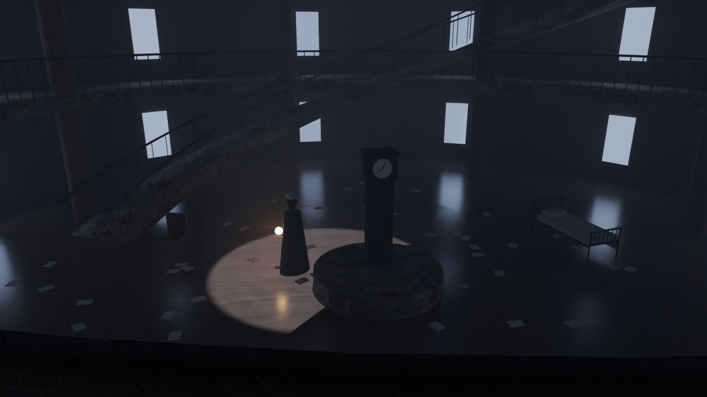
圆厅 · 全图中枢
三层圆厅、两圈回廊和一座大旋梯：所有区域都从这里分出去，也都会绕回这里。
- 箱庭中枢（参考《生化危机2 重制版》警察局大厅）：你总能看到下一个目标（楼上的门、旋梯顶的出口），但要绕一圈才走得到；每拿到一把钥匙，回到这里就多一条路。
- 站得高能看清，站在亮处会暴露：从回廊往下看能确认她在哪；天窗投下的月光圈是大厅里唯一被照亮的地面，走进去就会被看见。
- 光的语言：冷色月光从穹顶天窗垂直落下；她的提灯是全图唯一的暖光。看到暖光，就知道她在哪。
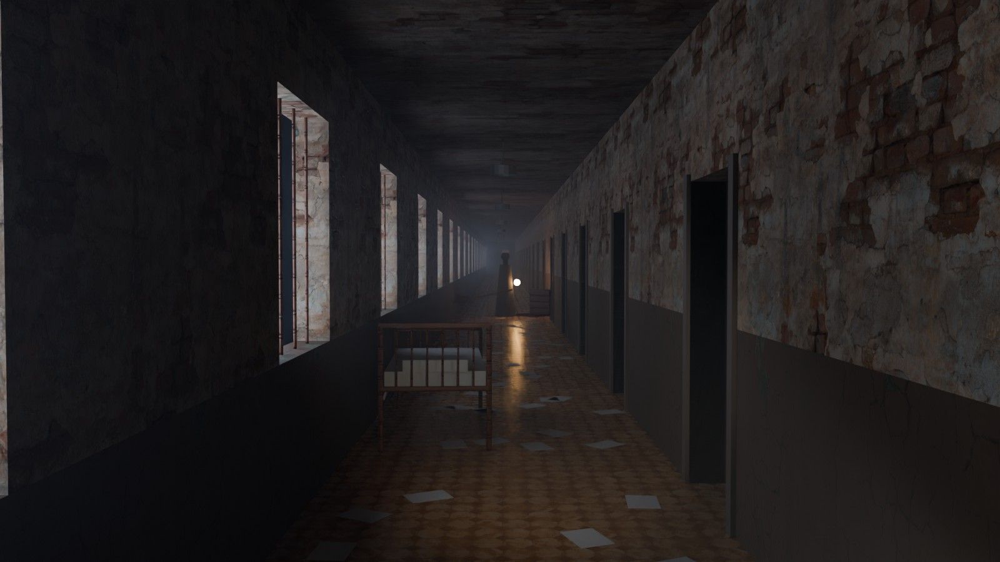
老楼病区 · 长走廊
76 m × 2.6 m，一侧 16 间病房，一侧铁栏窗；平面参考 Paimio 疗养院的折线布局，相邻两段走廊不成直角。
- 视线长，就有时间做决定（参考《寂静岭》医院、《逃生》）：提灯在 20–30 m 外就能看到，你有几秒钟选择：退回去、躲进病房，还是从晒台绕过去。
- 环路藏在房间里：3/7/11/15 号房有门通晒台，走廊和晒台连成环路；5/13 号房有衣柜可躲。直走廊本身是陷阱：两头都被堵就无路可退。
- 节奏：每扇窗在地上投一块月光，明暗交替像节拍器；她的提灯会先在旧亚麻地板上映出暖色反光，然后她本人才出现。
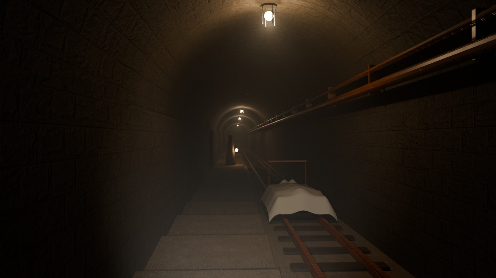
运尸隧道 · 下山捷径
参考 Waverly Hills 疗养院真实存在的运尸道：从 B1 太平间斜着穿过山体，通到山下锅炉房。
- 离安全屋最远的一段：约 150 m 长，平均坡度约 10%，一侧是铁轨，一侧是长台阶；中途只有 2 个避车洞可以躲。
- 明暗节奏：每三个灯泡坏一个，留出一段段黑暗；她站在暗处时被身后的灯照成剪影：你先看到轮廓，再看到提灯。
- 会说话的道具：轨道上停着盖白布的运尸车：既挡住一部分视线，也不用任何文字就交代了这条隧道过去的用途。
设计图纸
所有图纸都由同一份地图数据（sketches/sanatorium_map.py）画出，环路、瓶颈、离安全屋的距离都是自动算的。
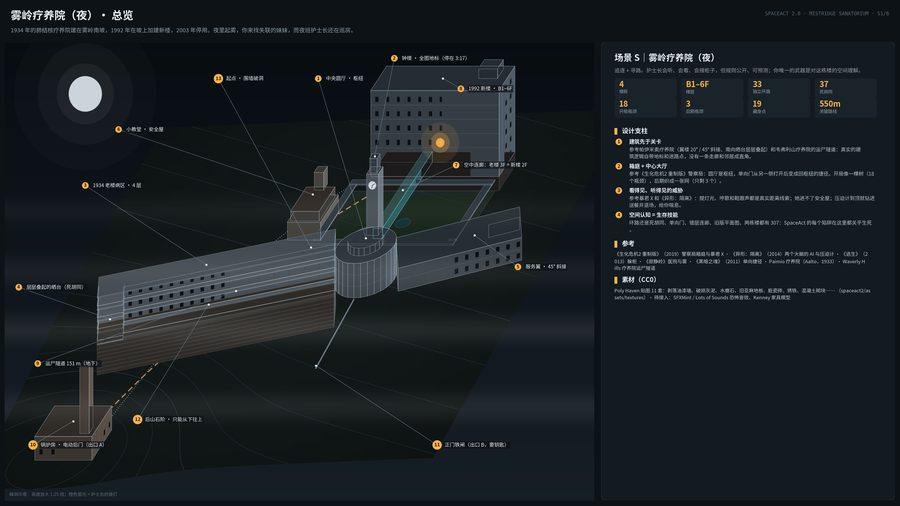
S1总览
轴测鸟瞰、地形、四栋楼和下山路线；设计支柱与关键数字。
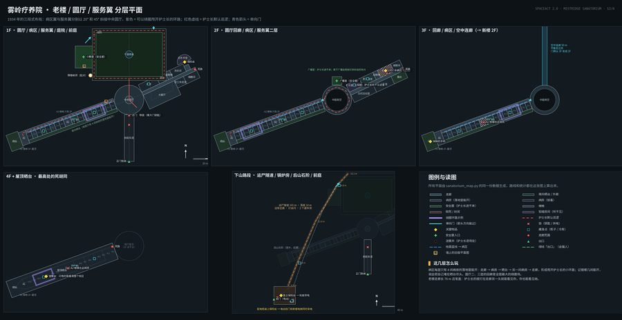
S2老楼 / 圆厅 / 服务翼平面
1934 年的三段式布局，环路、巡逻路线、单向门和藏身点。
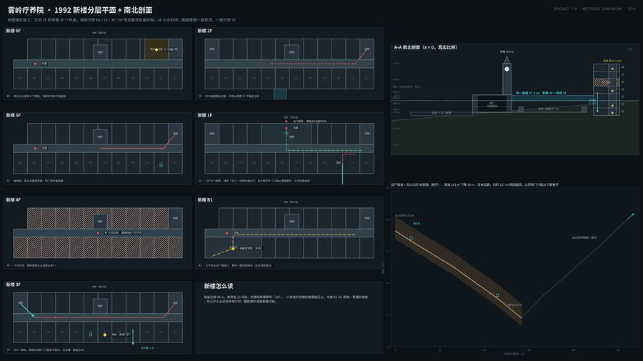
S31992 新楼平面 + 剖面
错层连廊、只停四层的电梯、火灾封闭的 4F，以及真实比例的南北剖面。
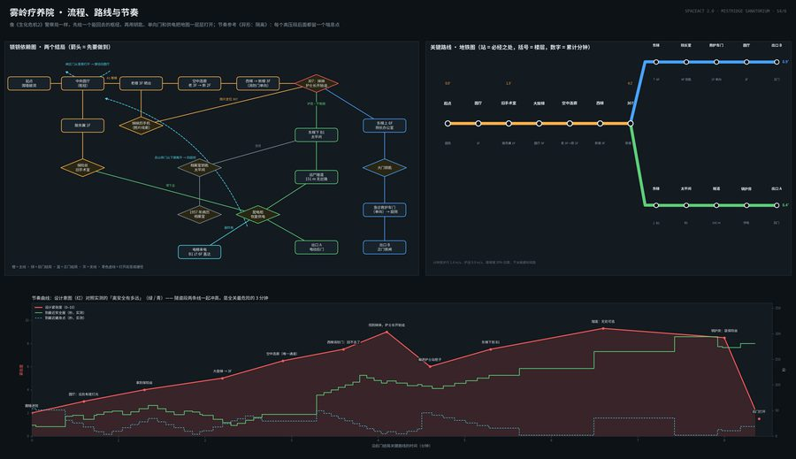
S4流程、路线与节奏
钥匙和供电怎样一层层打开地图；预期紧张度与实测的安全屋距离。
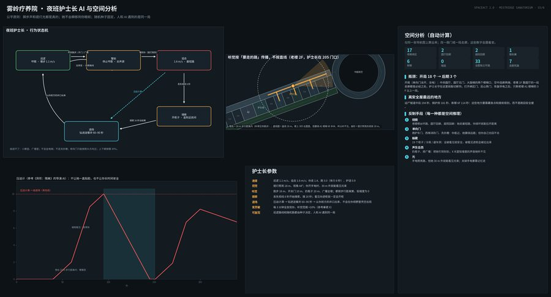
S5护士长 AI 与空间分析
状态机、按步行距离计算的听觉、压迫计，以及自动算出的瓶颈和环路。
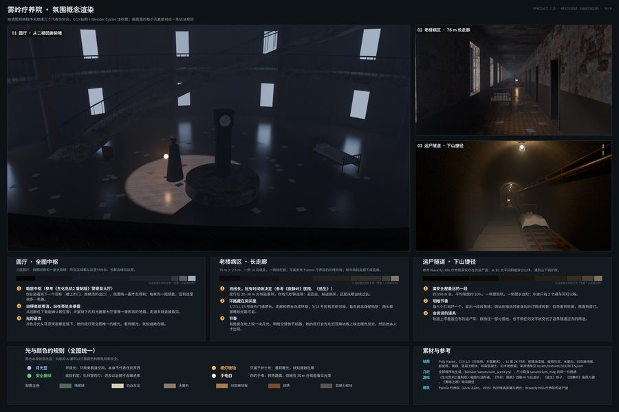
S6氛围概念渲染
三张渲染、光与颜色的规则、实测配色和素材来源。
设计支柱
参考与素材
建筑Paimio 疗养院（Alvar Aalto，1933）· Waverly Hills 疗养院的运尸道
贴图Poly Haven，CC0 1.0（可商用、无需署名），11 套 2K PBR，清单见 assets/textures/SOURCES.json
待接入SFXMint / Lots of Sounds 的 CC0 恐怖音效、Kenney 家具模型；可玩的网页版和 Python 环境还没做